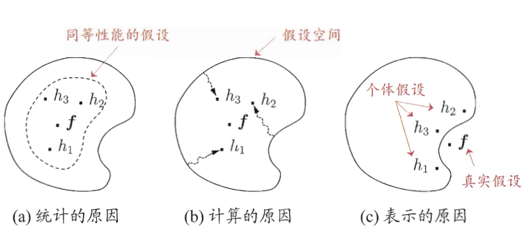
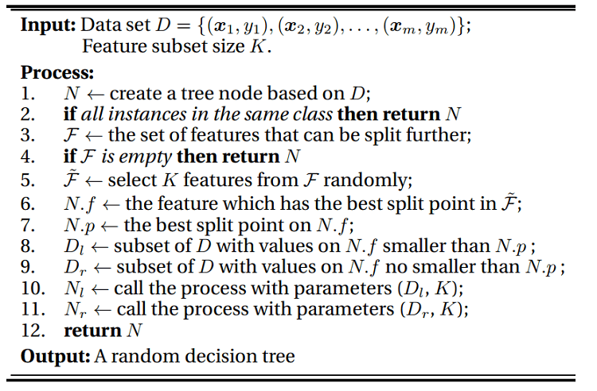

在KDD CUP、Kaggle、天池等数据挖掘比赛中，常常用到集成学习。使用了集成学习后，模型的效果往往有很大的进步。
本文将介绍常见的集成学习方法，包括但不限于：
- 集成学习为什么有效
- Voting
- Linear Blending
- Stacking
- Bagging
- 随机森林
集成学习
如果硬要把集成学习进一步分类，可以分为两类，一种是把强分类器进行强强联合，使得融合后的模型效果更强，称为模型融合。另一种是将弱分类器通过学习算法集成起来变为很强的分类器，称为机器学习元算法。
这里我们把用来进行融合的学习器称为个体学习器。
模型融合的代表有：投票法(Voting)、线性混合(Linear Blending)、Stacking。
而机器学习元算法又可以根据个体学习器之间是否存在依赖关系分为两类，称为Bagging和Boosting:
- Bagging: 个体学习器不存在依赖关系，可同时对样本随机采样并行化生成个体学习器。代表作为随机森林(Random Forest)
- Boosting: 个体学习器存在依赖关系,基于前面模型的训练结果误差生成新的模型，必须串行化生成。代表的算法有：Adaboost、GBDT、XGBoost
其中，Boosting相关的内容将在集成学习（二）进行介绍。
模型融合
上面提到，模型融合是把强分类器进行强强联合，变得更强。
在进行模型融合的时候，也不是说随意的融合就能达到好的效果。进行融合时，所需的集成个体（就是用来集成的模型）应该好而不同。好指的是个体学习器的性能要好，不同指的是个体模型的类别不同。
这里举个西瓜书的例子，在介绍例子之前，首先提前介绍简单投票法，以分类问题为例，就是每个分类器对样例进行投票，哪个类别得到的票数最多的就是融合后模型的结果。
在上面的例子中，采用的就是简单的投票法。中间的图b各个模型输出都一样，因此没有什么效果。第三个图c每个分类器的精度只有33%，融合后反而更糟。也就是说，想要模型融合有效果，个体学习器要有一定的准确率，并且要有多样性，学习器之间具有差异，即”好而不同“。
如何做到好而不同呢？可以由下面几个方面：
- 针对输入数据：使用采样的方法得到不同的样本（比如bagging方法采用自助法进行抽样）
- 针对特征：对特征进行抽样
- 针对算法本身：
- 个体学习器\(h_t\)来自不同的模型集合
- 个体学习器\(h_t\)来自于同一个模型集合的不同超参数，例如学习率\(\eta\)不同
- 算法本身具有随机性，例如用不同的随机种子来得到不同的模型
- 针对输出：对输出表示进行操纵以增强多样性
- 如将多分类转化为多个二分类任务来训练单模型
- 将分类输出转化为回归输出等
那么进行模型融合为什么比较好呢？虽然有俗话说：三个臭皮匠赛过诸葛亮，但是我们还是想知道，究竟是如何“赛过诸葛亮”的。这里摘录西瓜书如下：
学习器的结合可能会从三个方面带来好处：
首先，从统计的方面来看，由于学习任务的假设空间往往很大，可能有多个假设在训练集上达到相同的性能，此时若使用单学习器，可能因误选而导致泛化性能不佳，结合多个学习器则会减少这一风险；
第二，从计算的方面来看，学习算法往往会陷入局部极小，有的局部极小点所对应的泛化性能可能很糟糕，而通过多次运行之后进行结合，可降低陷入糟糕局部极小点的风险；
第三，从表示的方面来看，某些学习任务的真实假设可能不在当前学习算法所考虑的假设空间中，此时若使用单学习器则肯定无效，而通过结合多个学习器，由于相应的假设空间有所扩大，有可能学得更好的近似。
 advance-of-ensemble
下面介绍模型融合常见的方法。
投票和平均 Voting and Average
分类
对于分类任务来说，可以使用投票的方法：
- 简单投票法： \(H({\bf x}) =c_{\underset{x}{\mathrm{argmax}}}\sum_{i=1}^Th_i^j({\bf x})\)
- 即各个分类器输出其预测的类别，取最高票对应的类别作为结果。若有多个类别都是最高票，那么随机选取一个。
- 加权投票法： \(H({\bf x}) =c_{\underset{x}{\mathrm{argmax}}}\sum_{i=1}^T\alpha_i\cdot h_i^j({\bf x})\)
- 和上面的简单投票法类似，不过多了权重\(\alpha_i\)，这样可以区分分类器的重要程度，通常\(\alpha_i \ge 0;\hspace{1ex} \sum_{i=1}^T\alpha_i = 1\)
此外，个体学习器可能产生不同的\(h_i^j({\bf x})\)的值，比如类标记和类概率。
- 类标记\(h_i^j({\bf x}) \in \{0, 1\}\)，若\(h_i\)将样本x预测为类别\(c_j\)取值为1，否则为0。使用类标记的投票亦称“硬投票”。(其实就是多分类的输出)，使用类标记的称为硬投票
- 类概率\(h_i^j({\bf x}) \in [0, 1]\)，即输出类别为\(c_j\)的概率。使用类概率的投票称为软投票。对应sklearn中的VotingClassifier中voting参数设为soft。
PS：使用类概率进行结合往往比直接基于类标记的效果好，即使分类器估计出的概率值一般都不太准确。
回归
对于回归任务来说，采用的为平均法：
- 简单平均：\(H({\bf x}) =\frac{1}{T} \sum_{i=1}^Th_i({\bf x})\)
- 加权平均：\(H({\bf x}) =\frac{1}{T} \sum_{i=1}^T\alpha_i \cdot h_i({\bf x}) ; \ \ \alpha_i \ge 0; \ \ \sum_{i=1}^T\alpha_i = 1\)
线性混合 Linear Blending
前面提到过加权平均法，每个个体学习器的权重不再相等，看起来就像是对每个个体学习器做一个线性组合，这也是线性混合法名字的由来。那么最优的权重是什么呢？一个直接的想法就是最好的\(\alpha_i\)使得error最小，即对应了优化问题：
\[ \min_{\alpha_t\ge0}\ \frac{1}{M}\sum_{i=1}^M\left(y_i - \sum_{t=1}^T \alpha_th_t({\bf x}_i)\right)^2 \] 这里有T个个体学习器，每个学习器用\(h_t\)表示，而\(\alpha_t\)就是对应的权重。
这个优化问题很像之前讲的求解概率SVM（Platt模型）分为两阶段求解。这里我们首先用训练数据训练出所有的h，然后再做线性回归求出\(\alpha_t\)。注意到这里要求\(\alpha_t \ge 0\)，来个拉格朗日函数？其实不用，通常我们可以忽略这个条件。以二分类为例如果\(\alpha_i\)小于0，相当于把模型反过来用。（假如给你个错误率99%的模型，你反过来用正确率不就99%了么！）
如何得到\(h_t\)呢？这里我们将个体学习器称为初级学习器，用于结合的学习器称为次级学习器。首先从数据集中训练出初级学习器，然后”生成“一个新的数据集用于训练次级学习器。注意为了防止过拟合，我们需要在训练集上做训练得到初级学习器\(h_t\)，而在验证集上比较不同\(\alpha\)的好坏。最终模型则在所有的数据上进行训练（数据量多可能使得模型效果更好）
步骤如下：
- 从训练集\(D_{train}\)中训练得到\(h_1^-,h_2^-,\cdots,h_t^-\)，并对验证集\(D_{val}\)中的数据\(({\bf x_i},y_i)\)做转换为新的数据集\((\Phi^-({\bf x_i}),y_i)\)，其中\(\Phi^-({\bf x_i}) = (h_1^-({\bf x_i}),h_2^-({\bf x_i}),\cdots,h_t^-({\bf x_i}))\)
- 用线性回归求解\(\alpha = Lin\left(\{(z_i, y_i)\}\right)\)
- 最后，用所有的数据D求解得到\(h_1,h_2,\cdots,h_t\)，组成特征变换向量\(\Phi({\bf x}) = (h_1({\bf x}),h_2({\bf x}),\cdots,h_t({\bf x}))\)
- 对于新数据x，\(f({\bf x}) = \frac{1}{T}\sum_{t=1}^T\alpha_th_t({\bf x})\)
Stacking
Stacking相比Linear Blending来说，更加强大，然而也更容易过拟合。
Stacking做法和Linear Blending类似，首先从数据集中训练出初级学习器，然后”生成“一个新的数据集用于训练次级学习器。为了防止过拟合，采用K折交叉验证法求解。
一个直观的图如下：
假设采用5折交叉验证，每个模型都要做满5次训练和预测，对于每一次：
- 从80%的数据训练得到一个模型\(h_t\)，然后预测训练集剩下的那20%，同时也要预测测试集。
- 每次有20%的训练数据被预测，5次后正好每个训练样本都被预测过了。
- 每次都要预测测试集，因此最后测试集被预测5次，最终结果取5次的平均。
回归问题，代码如下（get_oof就是上图的过程）：
1 | _N_FOLDS = 5 # 采用5折交叉验证 |
如果是分类问题，我们对测试集的结果就不能像回归问题一样直接取平均，而是分类器输出所有类别的概率，最后取平均。每个分类器都贡献了_N_CLASS(类别数)的维度。
修改get_oof函数如下即可：
1 | _N_CLASS = 2 |
上面的代码只做了两层，你想的话还可以在加几层，因此这个方法叫做stacking，堆叠。。
Bagging
前面的模型融合中都是得到了尽可能好而不同\(h_t\)，然后在进一步的进行处理，这些\(h_t\)往往是用不同的模型、同一模型的不同的超参数或者不同随机种子得到的。
要让分类器不同，还可以对训练样本进行采样，但如果采样出的每个子集都完全不同，则每个基学习器只用到了一小部分训练数据，甚至不足以进行有效学习，这就不能保证训练出的学习器好。我们可以考虑使用有重叠的采样子集。对此，Bagging算法采用Bootstrap（也称为自助法）进行采样。
Bootstrap为有放回的抽样，每次从m个样本的数据集D中抽取一个，重复m次，最终得到包含m个样本的采样集D‘。显然，数据集D中有一部分样本会在D'中出现，而一部分不会。可以做一个简单的估计，样本在m次采样过程中始终不会被采样到的概率是\((1 - \frac{1}{m})^m\)，取极限得到： \[ \lim_{m\rightarrow\infty} \ (1 - \frac{1}{m})^m \rightarrow \frac{1}{e} \approx 0.368 \] 也就是说，每个基学习器用到了初始训练集中约63.2%的样本，剩下的36.8%的样本可以用来做”袋外估计“(out-of-bag estimate)，即这些没有用到的样本可以来做验证集，这会在随机森林种讲解。
假设有个学习器，则我们可以描述Bagging的算法如下：
对 \(t=1,2,\ldots, T\)
通过bootstrap算法抽样得到一个大小为m的采样集D'，在该采样集D'上训练得到\(h_t\)
最后得到T个\(h_t\)，用均匀混合法得到最后的模型。
PS：Bagging是英文Bootstrap Aggregation的缩写。其示意图如下:
从方差和偏差的角度看，Bagging主要降低的是方差，如果基算法对随机性比较敏感，那么bagging的结果会比较好。如不剪枝的决策树、神经网络。
随机森林
前面介绍过决策树算法，决策树算法对数据比较敏感，方差比较大，而刚提过的Bagging算法想让方差较大，最后用投票或平均值来减少最后模型的方差。
如果把决策树和Bagging结合起来呢？这就得到了随机森林。
随机森林的过程为：
对 \(t=1,2,\ldots, T\)
- 通过对原始数据集D做Bootstrap抽样，得到大小为m的数据集\(\tilde{D}_t\)
- 在\(\tilde{D}_t\)上运行基分类器学习算法\(A(\tilde{D}_t)\)，得到基分类器\(h_t\)
返回\(G={\rm Uniform}(\{h_t\})\) （就是对所有\(h_t\)做均匀混合）
其中基分类器\(h_t\)的训练算法\(A(\tilde{D}_t)\)为：
 random-forest
可以看出：
- 随机森林一开始采用自助法Bootstrap抽取数据
- 对于每棵树，在待分裂的节点上，随机选择K个特征
- 每一棵树为CART
上面的两种做法都是为了让基学习器尽可能好而不同。通常来说，K << d(原始特征个数)，随机森林的效率能进一步提升。随机森林的提出者建议，每个\(h_t\)每次分裂时都对特征都重采样一遍，这样效果会更好。若\(k = d\)，则与传统决策树相同，一般而言，推荐\(k = \log_2d\) 或者\(k = \sqrt{d}\)
袋外估计
随机森林采用Bootstrap来进行有放回的抽样，前面我们知道，抽取足够多次后，一个样本大约有36.8%的概率不被抽到，因此我们可以画出如下表格，用来假设每个基学习器用到的数据：
| 数据 / 基学习器 | \(h_1\) | \(h_2\) | \(h_3\) | \(\cdots\) | \(h_T\) |
|---|---|---|---|---|---|
| \(({\bf x_1},y_1)\) | \(\tilde{D}_1\) | * | \(\tilde{D}_3\) | \(\tilde{D}_T\) | |
| \(({\bf x_2},y_2)\) | * | * | \(\tilde{D}_3\) | \(\tilde{D}_T\) | |
| \(({\bf x_3},y_3)\) | * | \(\tilde{D}_2\) | * | \(\tilde{D}_T\) | |
| \(\cdots\) | |||||
| \(({\bf x_m},y_m)\) | \(\tilde{D}_1\) | * | * | * |
在表格中，*表示基分类器\(h_t\)没有用到数据\(({\bf x_i},y_i)\), 这时候就称该样本为\(h_t\)的袋外估计样本(OOB)。
在以往单个模型中，比如单个决策树，对于\(h_t\)没有使用过的数据，就是\(h_t\)对应的那列标*的，可以用来计算\(h_t\)的误差，来衡量\(h_t\)的好坏。但是在Bagging方法中其实没有必要这样做，对于Bagging方法我们要得到的是最后合起来的模型G，可能单个模型\(h_t\)不好，但是最后合起来的模型G却很好。
所以，我们想要估计的是最后模型G的误差。如果要用这些袋外估计样本，我们只需要保证这些样本不被“污染”，比如对于上面的表格中，\(({\bf x_m},y_m)\) 是\(h_2,h_3, h_T\)的袋外估计样本，可以用作\(G_m^- = \rm average(h_2,h_3, h_T)\)的验证资料。对于其它的样本如果没被用到也可以构造出一个\(G_i^-\)，因此整个模型G的误差可以用下式计算： \[ E_{\rm oob}(G) = \frac{1}{m} \sum_{i=1}^m {\rm err}(y_i, G_i^-({\bf x}_i)) \] 因此，在Bagging算法中，得到了模型G后就能马上知道它的效果如何，因为它可以通过\(E_{oob}\)来做一个自我验证，对超参数进行调整。与之前的验证方法相比，有了OOB数据和\(E_{oob}\)以后，既不用将数据集分为两份（验证集和训练集），也不用在确定好超参数以后重新训练模型了。
随机森林的特征选择
对于线性模型来说，特征的重要性由w的分量\(w_i\)体现出来，\(|w_i|\)越大，说明特征越重要（指的是相对其它特征）。但非线性模型则困难得多。
而随机森林可以用特殊的方法得出特征的重要性。基本原理是：如果特征 \(j\) 比较重要，如果往这个特征上塞入一些噪声，模型的表现肯定会变差。如何塞入噪声呢？ 加入服从均匀分布或高斯分布的随机值？这样有个小问题，就是原始的数据可能不服从这样的分布，加入噪声后，原始的分布可能被改变。
因此，可以对 \(\{x_{i,j}\}_{i=1}^m\) 的做一个重新的排列，这样该特征的分布就不会发生变化。记重排列特征 \(j\) 上的值以后得到的数据集为\(\mathcal{D}^{(p)}\)，特征 \(j\) 的重要性可以通过统计上称为排列测试 (permutation test)的方法进行估计： \[ {\rm importance}(j) = {\rm performance}(\mathcal{D}) - {\rm performance}(\mathcal{D}^{(p)}) \] 这里，\({\rm performance}(\mathcal{D}^{(p)})\)需要用重排列后的数据重新训练模型。 不过随机森林可以不用重新训练。前面提到过，可以用\(E_{oob}\)直接估计模型的性能，因此随机森林可以用下面的公式进行估计： \[ {\rm importance}(j) = E_{\rm oob}(G) - E_{\rm oob}^{(p)}(G) \] 注意，这里的后一项是\(E_{\rm oob}^{(p)}(G)\)而非\(E_{\rm oob}(G^{(p)})\)，就是说我们是在OOB集合上做排序，而非在训练集上。
那么如何计算\(E_{\rm oob}^{(p)}(G)\)呢？当我们要估计第 \(j\) 个特征的重要性时，可以这样做：
- 当我们要计算\(h_t({\bf x_i})\)的时候，\(\bf x_i\)为\(h_t\)的OOB数据，此时可以用随机其它的OOB数据点的第 \(j\) 个特征代替\(x_{ij}\)。因为OOB数据没有参与训练，得到的结果比较准确。
参考资料
- 机器学习技法 - 林轩田
- 《机器学习》 - 周志华
关于Stacking方面还可以查阅：